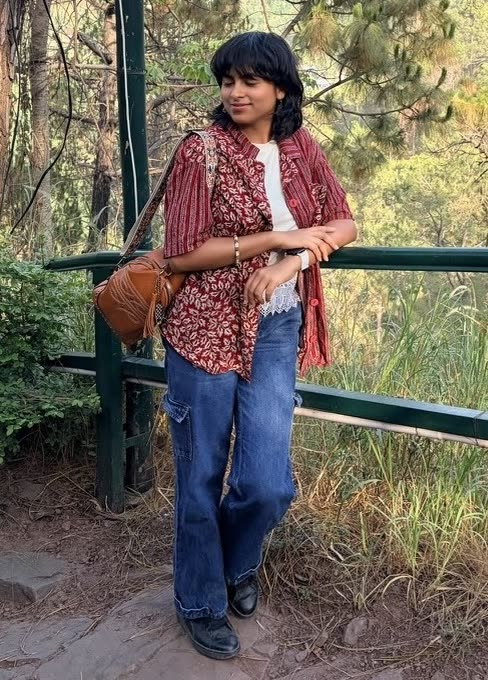

Sanjana Gupta
Stars explode. I take notes. Often about something else entirely :)
This website is part research record, part personal archive.
I am a first-year PhD student at UVa working with Dr. Poonam Chandra at NRAO on multiwavelength observations of stellar explosions, specifically stripped envelope supernovae and their links to gamma-ray bursts. Before starting my PhD in 2025, I was at Ashoka University in India, where I did a fairly scattershot series of projects ranging from neutron star equations of state, protostellar outflows, exoplanet validation, and climate modeling to quantum chemistry.
Outside research, I do some outreach, and try to learn new languages (Persian and Arabic right now). I love to read and travel when I can. Getting to know how people across cultures think and live is something I never stop finding interesting.
